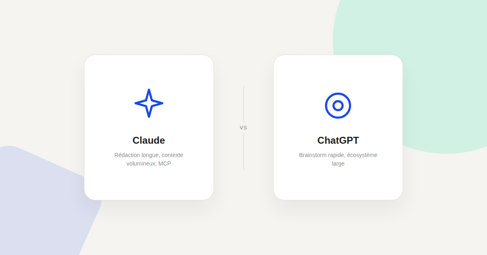
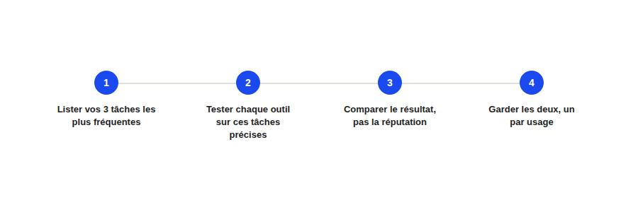

Claude ou ChatGPT pour le growth marketing : lequel choisir selon la tâche
« Lequel des deux on prend pour l'équipe ? » — question fréquente, et mauvaise question. Après les avoir utilisés tous les deux sur de vraies missions growth, ma réponse est la même que pour LinkedIn Ads et Google Ads : ce n'est pas un choix binaire, ce sont deux outils qui excellent sur des tâches différentes.

Je précise d'emblée un biais possible : ce site est construit avec l'assistance de Claude, et j'utilise Claude au quotidien dans mes missions. Ce comparatif n'a pas vocation à décréter un gagnant absolu — il vise à dire concrètement, tâche par tâche, ce que j'observe en usage réel de growth marketing, avec les points où ChatGPT reste pertinent.
Rédaction longue et cohérence de contexte
Sur la rédaction d'un contenu long (article de fond, guide, page pilier) qui doit rester cohérent sur plusieurs milliers de mots et respecter une charte éditoriale précise, Claude tient mieux la distance dans mon usage : la fonctionnalité Projets permet de charger durablement le contexte d'une marque (ton, exemples, contraintes) une seule fois, puis de le réutiliser sur des dizaines de générations sans le répéter à chaque fois.
Brainstorm rapide et exploration large
Pour un brainstorm initial — explorer vite un grand nombre d'angles sur une campagne, sans exigence de cohérence longue — ChatGPT reste un choix pertinent : son écosystème de plugins et son intégration large avec d'autres outils du quotidien en font un bon premier réflexe pour cette phase exploratoire, avant de passer à la rédaction plus posée.
Connexion directe à vos outils marketing
C'est le point qui a le plus évolué en 2026 : le Model Context Protocol (MCP) permet de connecter un assistant IA directement à Google Analytics, Google Ads, Semrush, HubSpot ou Notion, sans export manuel. Claude a poussé cette approche tôt et dispose d'un écosystème MCP mature avec plusieurs serveurs officiels d'éditeurs majeurs déjà disponibles — voir le Kit MCP Marketing pour la liste vérifiée. ChatGPT progresse aussi sur les connecteurs, mais avec une couverture d'outils marketing officiels encore plus restreinte au moment où j'écris ces lignes.

Analyse de données volumineuses
Pour analyser un export de données volumineux (un fichier CSV de plusieurs milliers de lignes, un rapport Search Console complet), la fenêtre de contexte et la capacité à raisonner sur un document entier sans le découper font une vraie différence pratique : sur ce type de tâche, je constate moins d'erreurs de synthèse avec Claude que par le passé avec des outils à fenêtre de contexte plus courte — mais les deux outils progressent vite sur ce point précis, et l'écart se resserre à chaque nouvelle version.
La bonne méthode : tester sur vos tâches, pas sur la réputation
Le comparatif le plus fiable n'est jamais un article — c'est le vôtre, sur vos trois tâches les plus fréquentes. Un outil qui excelle en rédaction créative peut décevoir sur l'analyse de données, et inversement. Dans la plupart des équipes growth que j'accompagne, la solution qui dure n'est pas « l'un ou l'autre » mais l'un pour la rédaction de fond et la connexion aux outils, l'autre pour l'exploration rapide — exactement comme pour LinkedIn Ads et Google Ads, deux outils complémentaires plutôt que concurrents.
FAQ
Faut-il payer un abonnement pour utiliser Claude ou ChatGPT en growth marketing ?
Les deux proposent une offre gratuite fonctionnelle pour démarrer. Les fonctionnalités avancées (contexte étendu, connecteurs MCP, plugins) sont généralement réservées aux offres payantes, utiles dès que l'usage devient quotidien.
Les connecteurs MCP fonctionnent-ils avec les deux outils ?
Le protocole MCP est un standard ouvert, en théorie compatible avec plusieurs clients IA. En pratique, la maturité et le nombre de connecteurs officiels disponibles varient selon l'outil au moment où vous lisez ces lignes — vérifiez toujours la documentation à jour de l'éditeur du connecteur.
Peut-on utiliser les deux outils en parallèle dans une même équipe ?
Oui, c'est même l'approche la plus fréquente que j'observe : un outil pour la rédaction de fond et la connexion aux données, l'autre pour l'exploration rapide et le brainstorm, sans que cela pose de problème d'organisation particulier.
Besoin d'aide pour choisir votre stack IA growth marketing ?
Pour aller plus loin, voir le Kit MCP Marketing, la page MCP pour le marketing, et la page GEO.
Pour continuer sur ce sujet.